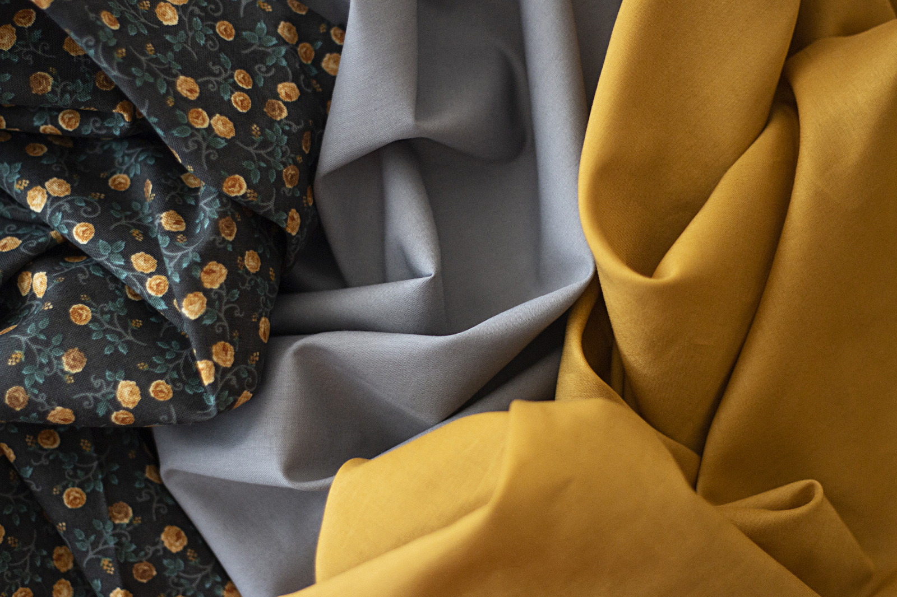

O Caimento Perfeito é a Nossa Arte.
O Ateliê especializado que une a precisão da alta costura com a paixão pela longevidade das suas peças.
Solicitar OrçamentoExperiência em Cada Ponto
Seja na criação de um vestido de festa sob medida ou no ajuste minucioso de uma peça, nosso ateliê garante o caimento impecável que você merece.
Confiança, precisão e o uso de técnicas tradicionais de alfaiataria definem a COSTURY ARTE.
Conheça Nossa História

Nossa Arte em Detalhes

A Essência do Handmade
Modelo Sob Medida
Pronta(o) para Transformar?
Fale diretamente com nossa Mestra Costureira e inicie seu projeto.
Fale Conosco Agora